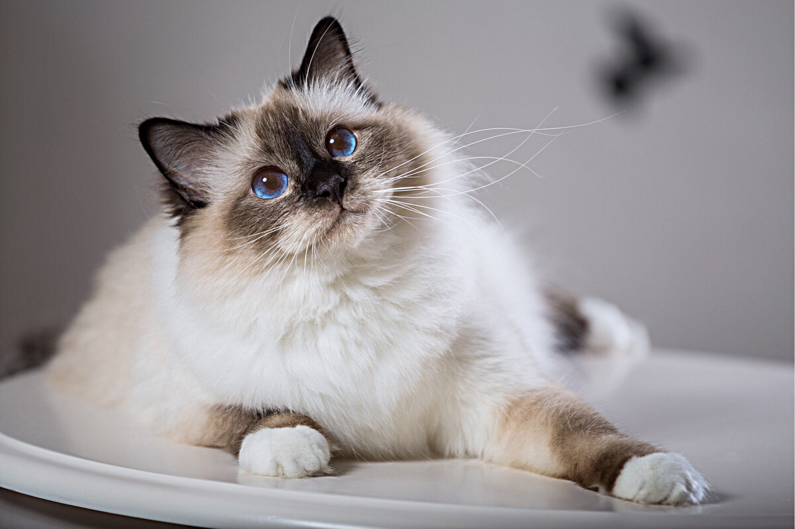
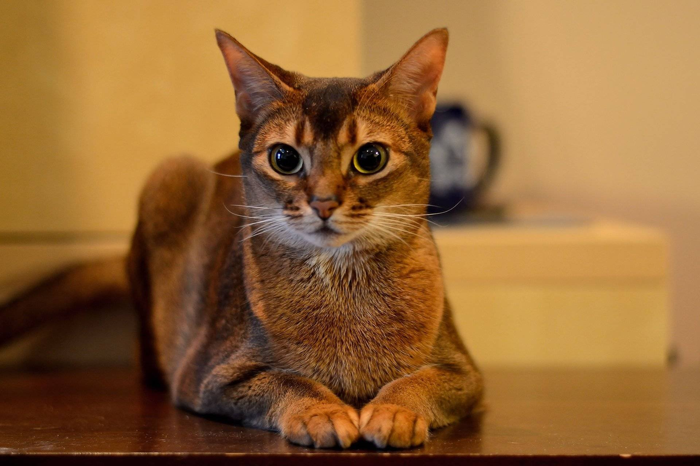

Кошка — домашнее животное, одно из наиболее популярных (наряду с собаками) «животных-компаньонов» или домашних животных. Кошки — млекопитающие и плотоядные животные. За способность уничтожать грызунов люди ценят кошек около 10 000 тысяч лет. Являясь одиночным охотником на грызунов и других мелких животных, кошка — социальное животное, использующее для общения широкий диапазон звуковых сигналов, а также феромоны и движения тела.
Минигрд. Разработчик Носков Е.К.